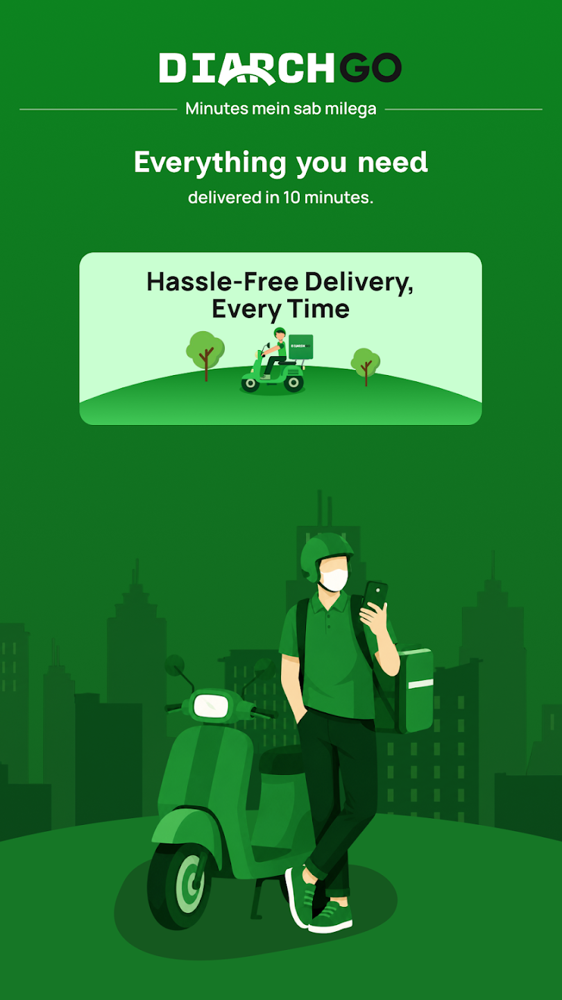
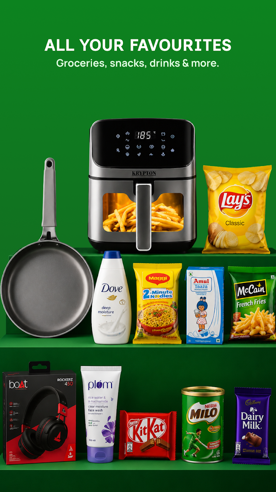
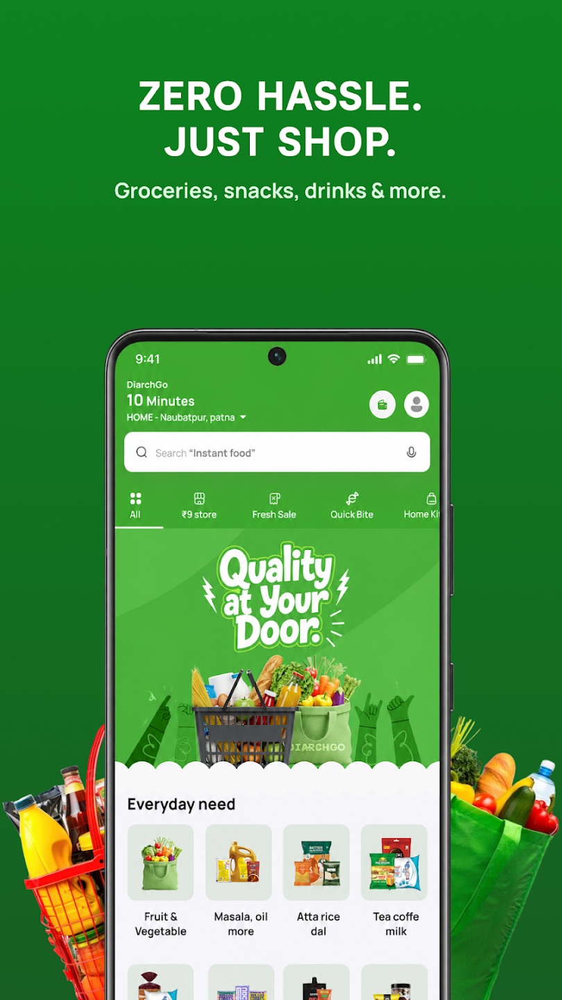
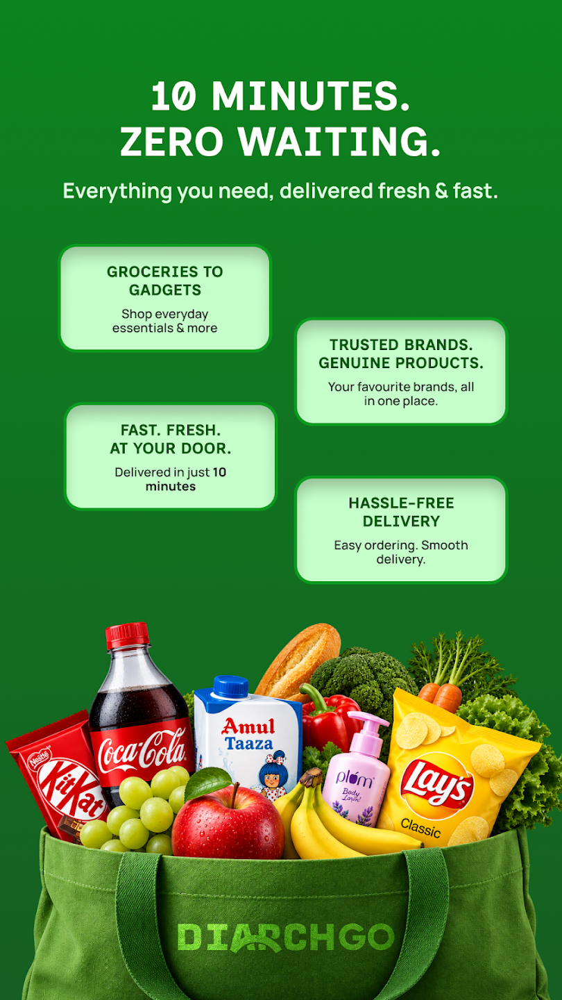
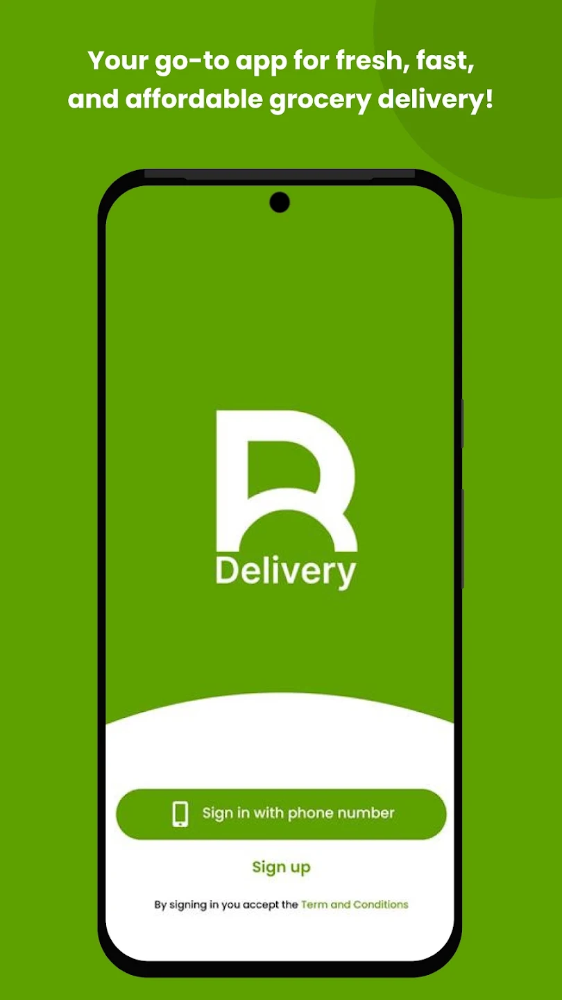
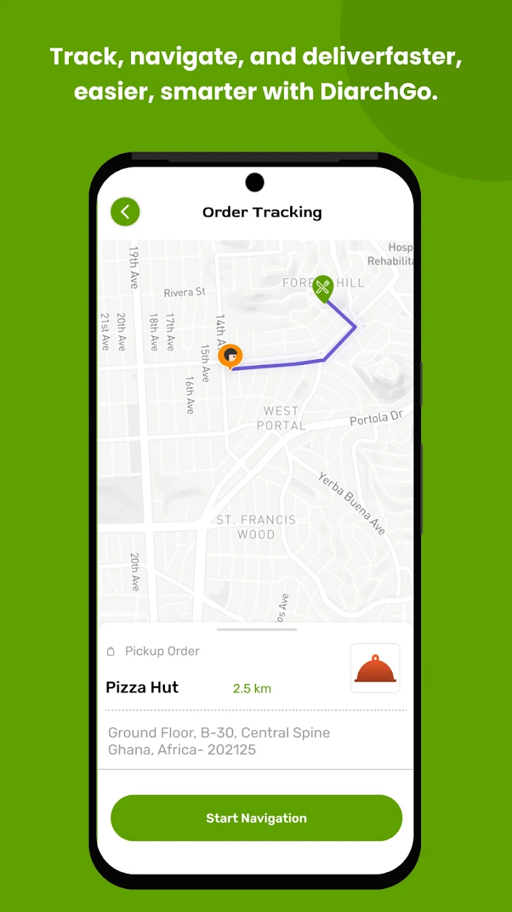
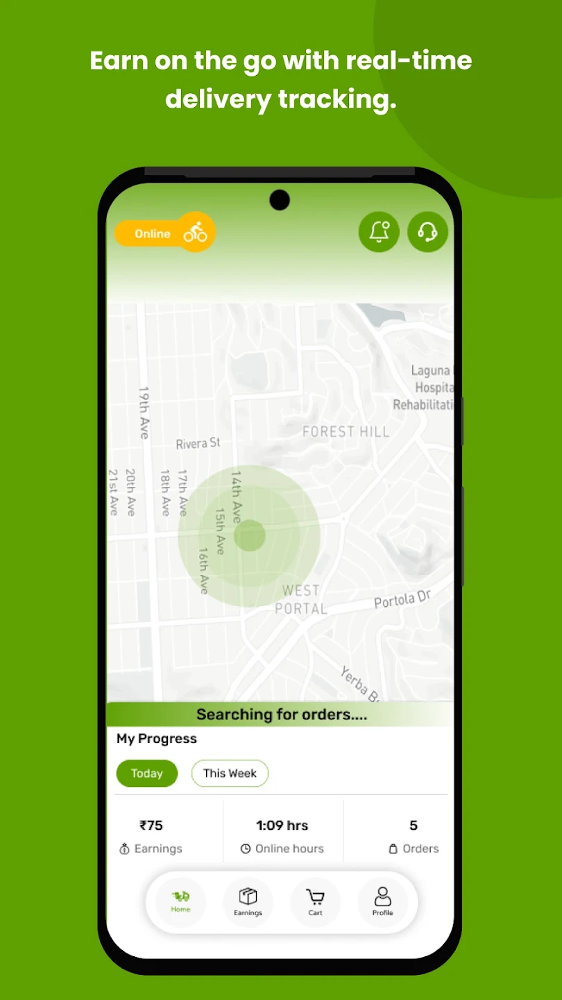
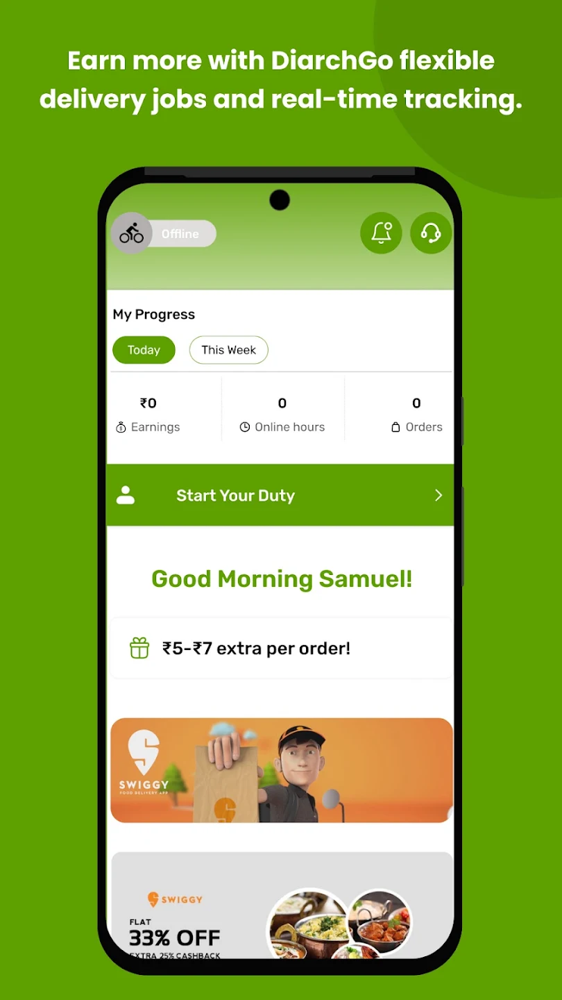

Backend software development
Build maintainable, reliable backend systems with Node.js, Express, NestJS, MongoDB, and PostgreSQL, focusing on business logic, database design, performance, and background processing.
Hi, I’m Agnav
I turn complex business requirements into practical software solutions. From designing APIs and system architecture to optimizing databases, automating workflows, and deploying applications to the cloud, I build systems that are built to perform and ready to scale.
Build maintainable, reliable backend systems with Node.js, Express, NestJS, MongoDB, and PostgreSQL, focusing on business logic, database design, performance, and background processing.
Integrate APIs, implement features, and build intuitive, reliable user experiences that simplify complex functionality.
Deploy and maintain production systems using Docker, AWS ECS, EC2, Redis, database infrastructure, and automated deployment pipelines.
Design scalable systems involving databases, caching, asynchronous queues, inventory workflows, and third-party integrations.
Design and build reliable REST APIs focusing on clear contracts, input validation, efficient data handling, secure integrations, and consistent error handling
Explore Python, agentic AI, fuzzy search for product matching, and development workflow automation to solve practical engineering problems.
Case study
DiarchGo is a live quick-commerce delivery service fulfilling daily orders through its own network of dark stores. I own the customer and rider mobile apps across Android and iOS, while engineering backend workflows for orders, deliveries, inventory, payments, and customer communication.
▶ Play Store ● App Store




▶ Play Store ● App Store




01
Orders · Deliveries · Inventory · Payments
Business impact Reduced the risk of financial discrepancies, inconsistent order states, and costly manual corrections.
02
60-second reconciliation interval · 10-minute stale-job threshold
Business impact Improved recovery from interrupted processing and reduced reliance on manual intervention for stuck workflows.
03
2 recovery APIs · 4 authorized roles · 7 RTS reason categories
Business impact Enabled authorized teams to recover deliveries without waiting for the scheduled cancellation cycle.
04
Android: 20% → 90% · iOS: 0% → 80%
Business impact Improved Android delivery by 70 percentage points and established an 80% iOS delivery channel from zero.
04 Experience